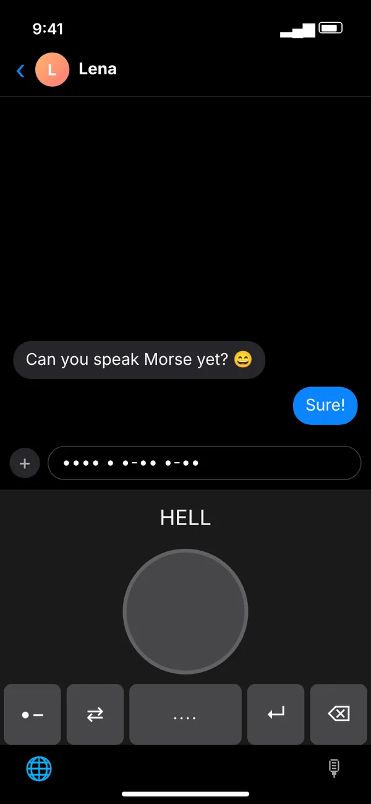

- Unduh MorseLux di App Store. Unduh diApp Store
- Buka Pengaturan → Umum → Papan Ketik → Papan Ketik.
- Ketuk Tambah Papan Ketik Baru… lalu pilih MorseLux.
- Opsional: aktifkan Izinkan Akses Penuh agar keyboard bisa memakai pengaturanmu di aplikasi, kunci ketuk (Pro), dan getaran saat mengetik.
- Di aplikasi apa pun, ketuk tombol globe 🌐 untuk beralih ke keyboard Morse.
MorseLux › Keyboard
·–·· ··– –··– Keyboard iPhone · di aplikasi apa pun
Keyboard Morse untuk iPhone
Menulis sandi Morse di iPhone, di aplikasi apa pun: WhatsApp, iMessage, Instagram, Catatan. Keyboard MorseLux punya tiga cara menulis: tombol titik dan garis serta huruf biasa yang berubah menjadi Morse (keduanya gratis), dan kunci ketuk seperti pada telegraf (Pro).
Unduh diApp Store
- ✓ Dua mode gratis
- ✓ Siap dalam 1 menit
- ✓ Berfungsi tanpa internet
- ✓ Ketikanmu tidak disimpan



Beginilah tampilan keyboard Morse di aplikasi – di sini dalam sebuah obrolan (ilustrasi, berbahasa Inggris).
Tiga cara menulis dengan keyboard Morse
·–
Tombol titik dan garis Gratis
Kamu mengetik setiap huruf dalam Morse. Keyboard menunjukkan huruf yang sedang terbentuk.
Aa
Huruf ke Morse Gratis
Kamu menulis seperti biasa dan pesannya keluar sebagai sandi Morse. Pas untuk pesan rahasia.
👆
Kunci ketuk Pro
Satu tombol besar seperti pada telegraf: ketuk singkat untuk titik, tahan untuk garis – dengan suara.
Siap dalam 1 menit
Berfungsi di semua aplikasi tempat kamu menulis
WhatsAppiMessageInstagramTelegramSnapchatTikTokSignalMailSafari
Keyboard Morse adalah keyboard sistem. Kamu beralih dengan tombol globe 🌐 – keyboard biasamu tetap seperti semula. Aplikasi dan keyboard berbahasa Inggris, Jerman, dan Spanyol.
Apa yang gratis dan apa yang Pro?
Gratis: tombol titik dan garis serta mode huruf ke Morse, tanpa batas waktu. MorseLux Pro membuka kunci ketuk dan semua pelajaran di aplikasi (langganan bulanan atau tahunan – yang tahunan dengan 1 minggu gratis – atau sekali beli; harga di App Store).
Gratis: tombol titik dan garis serta mode huruf ke Morse, tanpa batas waktu. MorseLux Pro membuka kunci ketuk dan semua pelajaran di aplikasi (langganan bulanan atau tahunan – yang tahunan dengan 1 minggu gratis – atau sekali beli; harga di App Store).
🔒 Pesanmu tetap milikmu
Keyboard tidak menyimpan atau mengirim apa yang kamu ketik, tidak membaca papan klip, dan berfungsi tanpa internet. Akses penuh hanya dipakai untuk pengaturanmu di aplikasi, pembukaan Pro (kunci ketuk), dan getaran saat mengetik. Rinciannya ada di kebijakan privasi (berbahasa Inggris).
Keyboard tidak menyimpan atau mengirim apa yang kamu ketik, tidak membaca papan klip, dan berfungsi tanpa internet. Akses penuh hanya dipakai untuk pengaturanmu di aplikasi, pembukaan Pro (kunci ketuk), dan getaran saat mengetik. Rinciannya ada di kebijakan privasi (berbahasa Inggris).
Pertanyaan umum
Bagaimana menulis Morse di iPhone?
Dengan keyboard Morse: pasang MorseLux, lalu buka Pengaturan → Umum → Papan Ketik → Papan Ketik → Tambah Papan Ketik Baru → MorseLux. Di aplikasi apa pun, beralihlah dengan tombol globe.
Apakah keyboard Morse gratis?
Tombol titik dan garis serta mode «huruf ke Morse» gratis. Kunci ketuk, yaitu satu tombol yang diketuk singkat dan lama seperti pada telegraf, termasuk dalam MorseLux Pro.
Apakah keyboard Morse berfungsi di WhatsApp?
Ya. Ini keyboard sistem, jadi berfungsi di WhatsApp, iMessage, Instagram, Telegram, Mail, Catatan, dan aplikasi apa pun yang punya kolom teks.
Adakah keyboard Morse untuk Android?
MorseLux hanya untuk iPhone. Di Android, Gboard dari Google punya tata letak sandi Morse. Di ponsel apa pun kamu juga bisa memakai penerjemah online lalu menyalin Morse-nya.
Apakah harus bisa Morse untuk memakai keyboard ini?
Tidak. Dalam mode «huruf ke Morse» kamu mengetik seperti biasa dan keyboard yang menulis kodenya. Yang ingin belajar bisa mengikuti pelajaran di aplikasi dan, di situs ini, latihan sandi Morse gratis.